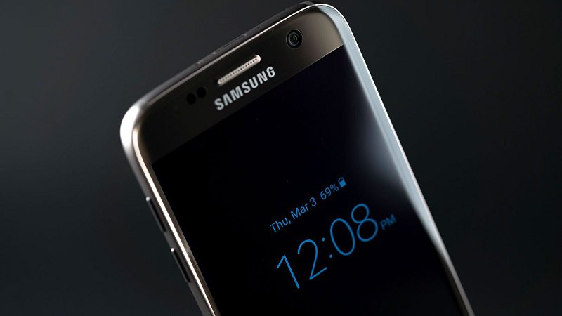
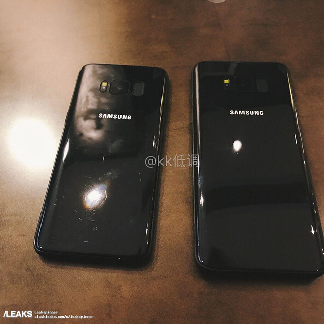
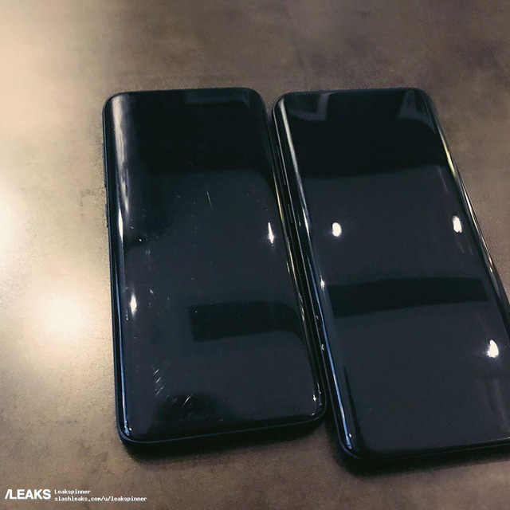

Giàn Trần: 19/3/2017

Năm ngoái, bộ đôi Galaxy S7 và S7 Edge đã đạt đến số lượng máy bán ra khổng lồ, lên tới 50 triệu chiếc. Đây quả thực là một nhận định khá tham vọng dành cho những siêu phẩm kế tiếp nhà Samsung.
Như chúng ta cũng đã biết rằng chiếc smartphone Android mới của Samsung được tất
cả mọi người mong chờ nhất nhì năm nay đã trễ hẹn tại sự kiện MWC 2017, và phải tới
cuối tháng này mới chính thức được ra mắt. Và theo nguồn tin từ Phonearena đã xác nhận,
hình ảnh mà mình chia sẻ dưới đây là một trong những thông tin rò rỉ mới nhất về Galaxy S8 và S8 Plus, mới các bạn xem qua nhé:


Từ bức ảnh trên chắc hẳn chúng ta cũng phần nào xác nhận được tất cả những thông tin liên quan đến thiết kế và kích thước của hai siêu phẩm này. Và nguồn tin cũng đã xác nhận rằng sẽ có đến 4 phiên bản màu sắc trên flagship mới này, bao gồm: Xanh biển (coral blue), đen, bạc và xám.
Ngoài ra, kẻ khổng lồ này có vẻ như chưa muốn tung ra phiên bản màu được yêu thích của dòng Galaxy, đó là xanh lục bảo và vàng hồng thời thượng. Tuy nhiên, chúng ta cũng đã đều biết rằng cuối năm sẽ có nhiều đợt bổ sung màu sắc mới nữa.
Cuối cùng thì theo như mình được biết, tại sự kiện Galaxy Unpacked diễn ra vào 29/3 sẽ thời ra mắt của Galaxy S8/S8 Plus. Ngày chính thức được mở dự kiến là nằm giữa 24/4 và 28/4, nhưng thị trường Châu Âu sẽ được trên S8 sớm hơn vào 21/4.
Xem Thêm:
alaxy S8 được dự báo sẽ còn bán chạy hơn cả đàn anh S7!
Địa chỉ: Phòng , Lầu 3, Tòa nhà Inovation công viên phần mềm Quang Trung Q.12 TP HCM
CSKH: (04) 1080
Khiếu nại góp ý: 0987654321
Tìm chúng tôi trên facebook